WaveNet overview
WaveNet[1] uses convolutional neural networks to find patterns in audio waveforms.
Convolution neural networks originated in their use in image deep learning, where convolutions in the image domain are useful for extracting features, i.e. patterns in the data. One can extend this concept to performing convolutions on audio waveform data (which differs from images in some ways: it is 1D, and has a causality constraint due to the implicit time axis) to discover recurring patterns and regularities that comprise meaningful sound e.g. speech, music.
WaveNet uses causal convolutions to ensure samples of audio are only dependent on previous samples. It is an autoregressive model, meaning that it computes a probabilistic model of what the next most likely sample to generate is, using the following probability distribution:
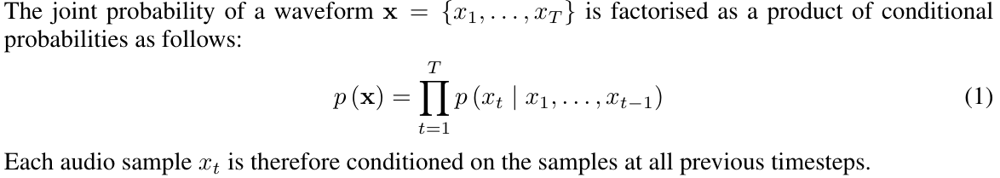
the conditional probability distribution is modelled by a stack of convolutional layers. ... the output of the model has the same time dimensionality as the input. The model outputs a categorical distribution over the next value x_t with a softmax layer and it is optimized to maximize the log-likelihood of the data w.r.t. the parameters.
In other words, WaveNet is optimized to maximize the likelihood of generating an output waveform that has features and patterns which are as close as possible to the gold standard, the input/training waveforms.
Another key concept in WaveNet is the use of dilated convolutions to learn features at wider timescales than consecutive samples (e.g. 1, 2, 4, 8, 16 samples apart).
The implementation of WaveNet I will be dissecting for the rest of this page is tensorflow-wavenet.
Intuition behind convolutional neural networks
A convolutional neural network creates broad "feature maps" from the raw input, reducing the dimensionality of the problem. This is useful in data that exhibits patterns, and the dominant paradigm in images and computer vision.
Convolution is a good way to identify patterns in data that is directly tied to space or time. Adjacent pixels in an image are adjacent for a reason. In the physical world, they collect light from neighboring locations. Time series data has a similar structure. Neighboring data points were produced close together in time and are much more likely to be related then points far apart. This inherent structure is what convolution exploits. It finds local patterns that reoccur in the data.https://e2eml.school/convolution_one_d.html
This paperHOW DO DEEP CONVOLUTIONAL NEURAL NETWORKSLEARN FROM RAW AUDIO WAVEFORMS? attempts to understand how image CNN intuitions also apply to audio waveforms. They say that there is a lack of understanding of how deep CNNs actually learn from an audio waveform, and that current waveform models have been adapted from the image domain (where CNNs are demonstrably effectivezeiler and fergus 2014).
This is possibly supported in the case of WaveNet, which is built on PixelCNN, an image/computer vision model. In the author's criticism of the use of CNNs for audio, they say that:
in computer vision, the first layer of CNNs usually extracts low-level features such as edges, while the following layers of CNNs usually capture high-level features such as shapes. However, there are no corresponding concepts of "edges" and "shapes" for audio waveforms. Therefore, it remains unknown what actual features CNNs learn from waveforms.
WaveNet states that they use CNNs to model audio which contains patterns at multiple temporal resolutions, and yet the authors here claim that low-level features and high-level features (edges and shapes) in images have no equivalent in audio.
The critics conclude that:
From a scientific standpoint, using deep CNNs as a black box for audio and speech processing is deeply unsatisfactory. Without a clear understanding of how and why CNNs can learn from raw audio waveforms, the development of better models, i.e., the design of the network architecture and the determination of hyper-parameters, is reduced to trial-and-error. In fact, the network architecture and hyper-parameter settings of existing approaches are similar to those of computer vision models.
As a counterpoint, this paper discusses the success of 1D Convolutional neural networks for 1D signals (not necessarily audio waveforms): https://arxiv.org/pdf/1905.03554.pdf, but without any simple intuition visual/graphic aids.
Image CNN intuitions
Let's look at an animation of how an image convolution extracts featureshttps://developers.google.com/machine-learning/practica/image-classification/convolutional-neural-networks:

Here's a visualization of successive convolution layers applied to a cat picturehttps://towardsdatascience.com/applied-deep-learning-part-4-convolutional-neural-networks-584bc134c1e2:
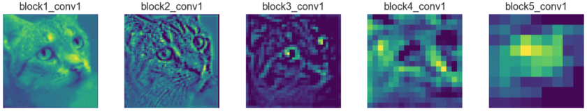
The image of the cat gets more "abstract" as the convolutions get deeper, as broader and higher level features are extracted. This fits into a larger, typical architecture of an image CNN modelsame google one:
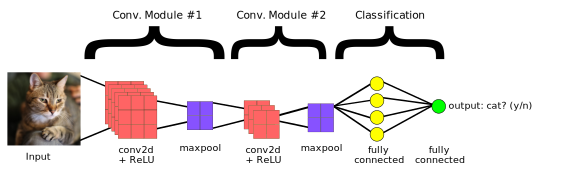
According to the intuition of WaveNet (and SampleRNN), there should be a music analog to this multi-level feature extraction.
Audio waveform convolutions and feature maps
The above visualizations have their equivalent in some papers on 1D convolutions on audio waveformshttps://www.researchgate.net/publication/308831941_Very_Deep_Convolutional_Neural_Networks_for_Raw_Waveforms, https://www.groundai.com/project/end-to-end-environmental-sound-classification-using-a-1d-convolutional-neural-network/1:
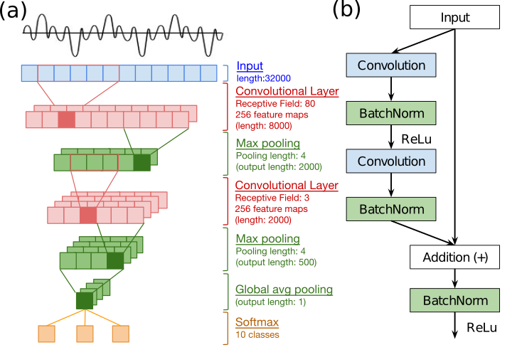
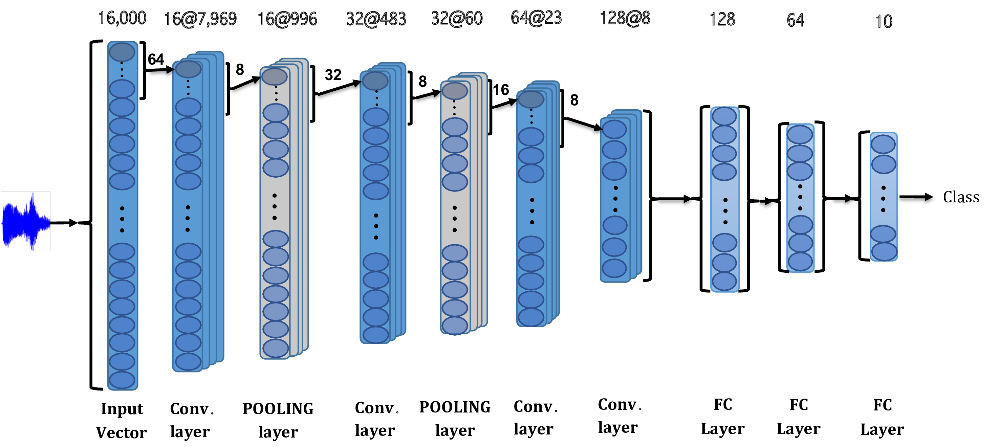
In this paperhttps://arxiv.org/pdf/1712.00866.pdf, a spectral visualization of the audio waveform after applying simple 1x2,3 1D convolution filters (WaveNet uses 1x2) in a simplified model called SampleCNN shows a similar "broad feature extraction" as the cat picture above:
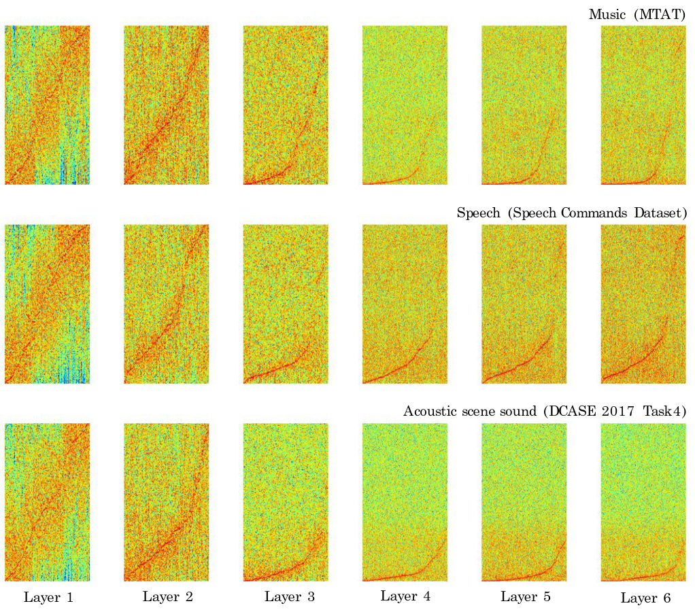
It looks like we can develop the intuition that the equivalent of extracting broad "edges and shapes" from the image domain, in audio waveforms, is more easily seen in the spectrogram, even though the 1D convolution is applied to the waveform. The authors conclude:
We presented the two sample-level CNN models that directly take raw waveforms as input and havefilters with small granularity. As future work, we will investigate more filter visualization techniques to have better understanding of the models.
I think there's enough shown above to accept the premise that 2D CNNs on images and 1D CNNs on audio are useful for the same underlying reason, that they both represent real world sequential waveforms, where the individual pixels/samples in close near each other are related either spatially or temporally.
Receptive field and dilated convolutions
This WaveNet analysishttps://github.com/AhmadMoussa/A-guide-to-Wavenet has good descriptions and visual aids of the use of dilated convolutions. In a convolutional neural network, the receptive field can be seen as the region of interest on the input that are considered by the convolutional filter for the outputs.
What are dilated convolutions? A dilated convolution refers to a convolution with a filter that is dilated, where dilated means that the filter is enlarged by spacing out the weight values and padding them with zeroes in between. What is really happening, is that we are expanding the receptive field and increasing our coverage, we are looking at the relationship between neighbours that are a little bit more distant from each other. This is useful if some important features of our data are only definable in regions larger than what our receptive field covers.
Animation of dilated convolution filter:
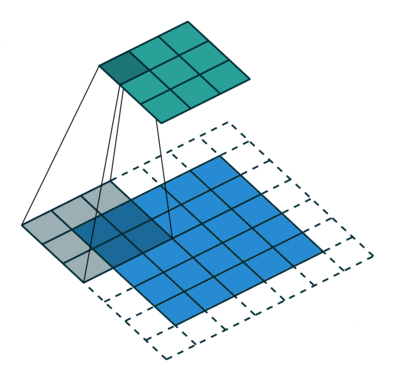
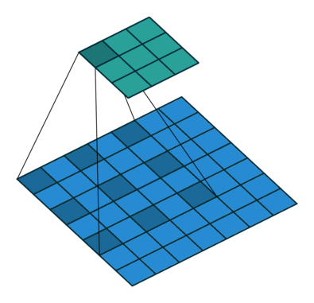
Flat 2D visualization of dilated convolution filters:
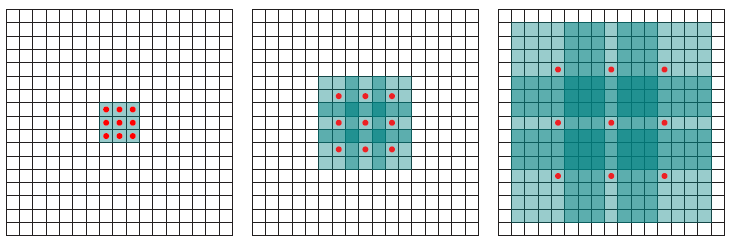
This ties directly into the WaveNet paper'swavenet paper rationale for selecting dilated convolutions:
In order to deal with long-range temporal dependencies needed for raw audio generation,we develop new architectures based on dilated causal convolutions, which exhibit very large receptive fields.
The use of a stack of dilated convolutions lets them exponentially increase the receptive field while keeping computational cost low:
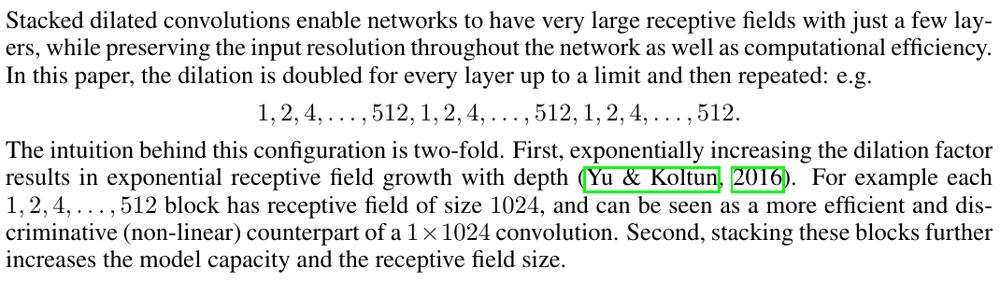
Finally, a diagram from the paper shows WaveNet's stack of dilated convolutions and how the dilations represent longer temporal relations, i.e. a bigger receptive field into the past samples:
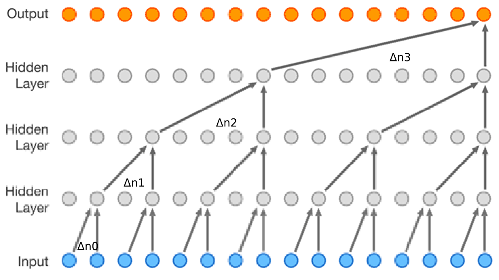
Calculating the receptive field
The WaveNet paper describes receptive fields in values of ms or s. Referring to their text-to-speech experiments:
The receptive field size of the WaveNets was 240 milliseconds.
Referring to their music experiments:
We found that enlarging the receptive field was crucial to obtain samples that sounded musical. Even with a receptive field of several seconds, the models did not enforce long-range consistency which resulted in second-to-second variations in genre, instrumentation, volume and sound quality.
The ibab/tensorflow-wavenet implementation includes the following code for receptive field calculation:
@staticmethod
def calculate_receptive_field(filter_width, dilations)
receptive_field = (filter_width - 1) * sum(dilations) + 1
receptive_field += filter_width - 1
return receptive_field
When run against the default wavenet params, this gives a value of 5117:
"filter_width": 2,
"dilations": [1, 2, 4, 8, 16, 32, 64, 128, 256, 512,
1, 2, 4, 8, 16, 32, 64, 128, 256, 512,
1, 2, 4, 8, 16, 32, 64, 128, 256, 512,
1, 2, 4, 8, 16, 32, 64, 128, 256, 512,
1, 2, 4, 8, 16, 32, 64, 128, 256, 512],
The default WaveNet settings in this implementation, therefore, produce a receptive field of 320ms (at a 16 kHz sample rate).
Preprocessing
In WaveNet, the waveform amplitudes (a 1D array of floats, in their raw form) are mu-law encoded, and then one-hot encoded[2]. The default value for mu-law quantization channels is 256. This is for computational efficiency - WaveNet only has to reason about 256 possible output values.
I extracted out the preprocessing/encoding steps into a script to run them isolated from the larger network:
import tensorflow as tf
import scipy
from scipy.io.wavfile import read as wav_read
import librosa
import sys
import matplotlib.pyplot as plt
from datetime import datetime
quantization_channels=2**8
batch_size = 1
def mu_law_encode(audio):
'''Quantizes waveform amplitudes.'''
with tf.name_scope('encode'):
mu = tf.to_float(quantization_channels - 1)
# Perform mu-law companding transformation (ITU-T, 1988).
# Minimum operation is here to deal with rare large amplitudes caused
# by resampling.
safe_audio_abs = tf.minimum(tf.abs(audio), 1.0)
magnitude = tf.log1p(mu * safe_audio_abs) / tf.log1p(mu)
signal = tf.sign(audio) * magnitude
# Quantize signal to the specified number of levels.
return tf.to_int32((signal + 1) / 2 * mu + 0.5)
def _one_hot(input_batch):
'''One-hot encodes the waveform amplitudes.
This allows the definition of the network as a categorical distribution
over a finite set of possible amplitudes.
'''
with tf.name_scope('one_hot_encode'):
encoded = tf.one_hot(
input_batch,
depth=quantization_channels,
dtype=tf.float32)
shape = [1, -1, quantization_channels]
encoded = tf.reshape(encoded, shape)
return encoded
if __name__ == '__main__':
x, _ = librosa.load(sys.argv[1], mono=True)
mu_law_encoded = mu_law_encode(x)
encoded = _one_hot(mu_law_encoded)
with tf.Session() as sess:
encoded_eval = encoded.eval()
mu_law_eval = mu_law_encoded.eval()
for i in range(x.shape[0]):
print('waveform value: {0}'.format(x[i]))
print('mu-law encoded value: {0}'.format(mu_law_eval[i]))
print('one-hot encoded values: {0}'.format(encoded_eval[0][i]))
quantization_channels is one of the arguments to the entire WaveNet model - I set it at the default, 256. The outputs when loaded on an example waveform are instructive:
waveform value: 0.0006352805648930371
mu-law encoded value: 131
one-hot encoded values: [0. 0. 0. 0. 0. 0. 0. 0. 0. 0. 0. 0. 0. 0. 0. 0. 0. 0. 0. 0. 0. 0. 0. 0.
0. 0. 0. 0. 0. 0. 0. 0. 0. 0. 0. 0. 0. 0. 0. 0. 0. 0. 0. 0. 0. 0. 0. 0.
0. 0. 0. 0. 0. 0. 0. 0. 0. 0. 0. 0. 0. 0. 0. 0. 0. 0. 0. 0. 0. 0. 0. 0.
0. 0. 0. 0. 0. 0. 0. 0. 0. 0. 0. 0. 0. 0. 0. 0. 0. 0. 0. 0. 0. 0. 0. 0.
0. 0. 0. 0. 0. 0. 0. 0. 0. 0. 0. 0. 0. 0. 0. 0. 0. 0. 0. 0. 0. 0. 0. 0.
0. 0. 0. 0. 0. 0. 0. 0. 0. 0. 0. 1. 0. 0. 0. 0. 0. 0. 0. 0. 0. 0. 0. 0.
0. 0. 0. 0. 0. 0. 0. 0. 0. 0. 0. 0. 0. 0. 0. 0. 0. 0. 0. 0. 0. 0. 0. 0.
0. 0. 0. 0. 0. 0. 0. 0. 0. 0. 0. 0. 0. 0. 0. 0. 0. 0. 0. 0. 0. 0. 0. 0.
0. 0. 0. 0. 0. 0. 0. 0. 0. 0. 0. 0. 0. 0. 0. 0. 0. 0. 0. 0. 0. 0. 0. 0.
0. 0. 0. 0. 0. 0. 0. 0. 0. 0. 0. 0. 0. 0. 0. 0. 0. 0. 0. 0. 0. 0. 0. 0.
0. 0. 0. 0. 0. 0. 0. 0. 0. 0. 0. 0. 0. 0. 0. 0.]
The purpose of one-hot encoding is to transform a number (in this case, the mu-law encoded value, which is by design clamped to a range of 256) into a categorical distribution - a value of 131 is 0*0 + 0*1 + 0*2 + ... + 1*131 + 0*132 + .... Using the categorical distribution, the input waveforms are transformed into a form that can be used in a probabilistic model.
Training layers - stack of dilated convolutions
After the input data has been encoded in this form, the WaveNet model then feeds it in batches into its k layers of stacked dilated causal convolutions. That's where the "meat" of the model is. It gets complicated here so I'll try to intersperse explanations from different sources.
The following diagram from the paper[1] describes the layers:
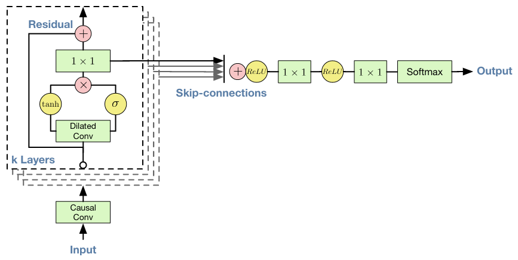
Stack of dilated convolutions - details
The term "stack of dilated convolutions" is a very high-level description of WaveNet which ignores some implementation details. This articlehttps://medium.com/@kion.kim/wavenet-a-network-good-to-know-7caaae735435 does a good job in describing the details of the stack, including describing the residual blocks and skip connections.
Residual block can be thought of as a building block for WaveNet . There are as many blocks as the number of dilation layers. For each residual block, the output of the previous block will be fed into the next one. By doing this, local features in low dilation layers are accumulated sequentially to capture dependency between the data points at distance. Let take a look at the inside block.
To copy from that article directly, a residual block produces two outputs:
- Feature map from the previous residual block, which will be used as an input for the next one
- Skip connection, which will be used to calculate loss function for the batch after the aggregation
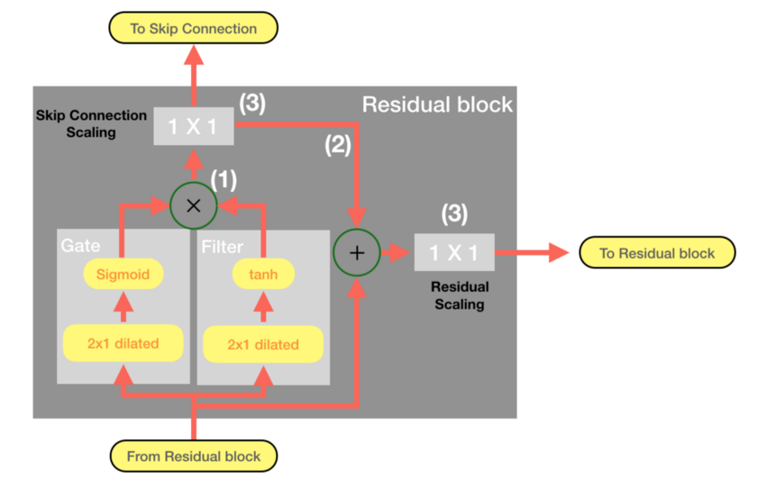
Finally, the residual blocks are summed together in the total model:
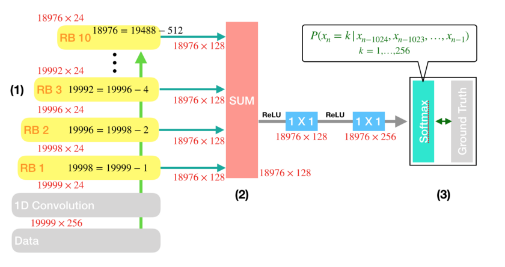
The final matrix of parameters from the hidden layers considers all of these dilated temporal convolutional layers summed together, so that the output waveform respects a learned distribution that considers all of the sequential coarser-time features.
The first causal convolution
In the code (taken from wavenet/model.py):
def causal_conv(value, filter_, dilation, name='causal_conv'):
with tf.name_scope(name):
filter_width = tf.shape(filter_)[0]
if dilation > 1:
transformed = time_to_batch(value, dilation)
conv = tf.nn.conv1d(transformed, filter_, stride=1,
padding='VALID')
restored = batch_to_time(conv, dilation)
else:
restored = tf.nn.conv1d(value, filter_, stride=1, padding='VALID')
# Remove excess elements at the end.
out_width = tf.shape(value)[1] - (filter_width - 1) * dilation
result = tf.slice(restored,
[0, 0, 0],
[-1, out_width, -1])
return result
def _create_causal_layer(self, input_batch):
'''Creates a single causal convolution layer.
The layer can change the number of channels.
'''
with tf.name_scope('causal_layer'):
weights_filter = self.variables['causal_layer']['filter']
return causal_conv(input_batch, weights_filter, 1)
As we saw in the diagram, the first transform applied to the input is a causal convolution (no holes/dilations - this is for immediately consecutive samples):
# input_batch is the mu-law + one-hot encoded waveform we saw above
current_layer = input_batch
current_layer = self._create_causal_layer(current_layer)
Note that the function causal_conv takes an argument of dilation=1, meaning undilated or consecutive samples.
The actual convolution is in the TensorFlow function tf.nn.conv1d[3]. The arguments are the input waveform (after the preprocessing), and a weights filter:
weights_filter = self.variables['causal_layer']['filter']
tf.nn.conv1d(input_batch, weights_filter, stride=1, padding='VALID')
What exactly is this weights_filter that we are convolving the input with? It's constructed in the WaveNet model constructor:
filter_width = 2 # Convolutions just use 2 samples.
filter_width: The samples that are included in each convolution,
after dilating.
'''Create a convolution filter variable with the specified name and shape,
and initialize it using Xavier initialition.'''
So we're convolving the input waveform in 1D using a filter size of 2 (i.e. 2 consecutive samples) to build the first sample-to-sample pattern relationship of the input waveform in the model. We can see it clearly in the diagram below, showing 2 consecutive blue (input) samples being passed through the first convolution layer:
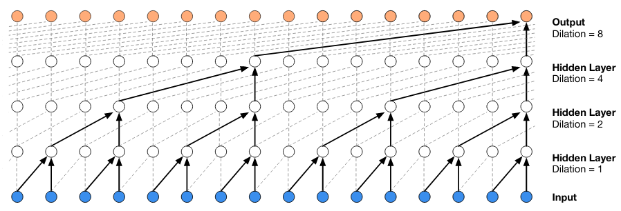
Stack of dilated convolution layers - code
Afterwards, as in the diagram, there's an iterative layer of dilated convolutions that feed into each other:
# Add all defined dilation layers.
with tf.name_scope('dilated_stack'):
for layer_index, dilation in enumerate(self.dilations):
with tf.name_scope('layer{}'.format(layer_index)):
output, current_layer = self._create_dilation_layer(
current_layer, layer_index, dilation,
output_width)
outputs.append(output)
The self.dilations variable is loaded from wavenet_params.json:
"dilations": [1, 2, 4, 8, 16, 32, 64, 128, 256, 512,
1, 2, 4, 8, 16, 32, 64, 128, 256, 512,
1, 2, 4, 8, 16, 32, 64, 128, 256, 512,
1, 2, 4, 8, 16, 32, 64, 128, 256, 512,
1, 2, 4, 8, 16, 32, 64, 128, 256, 512],
These represent those "wider timescale of learning" - 1 sample apart, 2, 4, etc. for coarser and higher-level patterns in the audio. We saw code earlier for the creation of dilated convolutions. In the WaveNet implementation studied, they don't use the dilations parameter of the conv1d function, but instead use their own pre- and post- dilation steps:
def time_to_batch(value, dilation, name=None):
with tf.name_scope('time_to_batch'):
shape = tf.shape(value)
pad_elements = dilation - 1 - (shape[1] + dilation - 1) % dilation
padded = tf.pad(value, [[0, 0], [0, pad_elements], [0, 0]])
reshaped = tf.reshape(padded, [-1, dilation, shape[2]])
transposed = tf.transpose(reshaped, perm=[1, 0, 2])
return tf.reshape(transposed, [shape[0] * dilation, -1, shape[2]])
def batch_to_time(value, dilation, name=None):
with tf.name_scope('batch_to_time'):
shape = tf.shape(value)
prepared = tf.reshape(value, [dilation, -1, shape[2]])
transposed = tf.transpose(prepared, perm=[1, 0, 2])
return tf.reshape(transposed,
[tf.div(shape[0], dilation), -1, shape[2]])
if dilation > 1:
transformed = time_to_batch(value, dilation)
conv = tf.nn.conv1d(transformed, filter_, stride=1,
padding='VALID')
restored = batch_to_time(conv, dilation)
With a simple modification to the earlier used onehot_test.py, we can see what these functions do:
mu_law_encoded = mu_law_encode(x)
encoded = _one_hot(mu_law_encoded)
with tf.Session() as sess:
for dilation in [1, 4, 16]:
print('DILATION: {0}'.format(dilation))
print(encoded)
transformed = time_to_batch(encoded, dilation)
print(transformed)
restored = batch_to_time(transformed, dilation)
print(restored)
Output:
DILATION: 1
Tensor("one_hot_encode/Reshape:0", shape=(1, 1024, 256), dtype=float32)
Tensor("time_to_batch/Reshape_1:0", shape=(1, 1024, 256), dtype=float32)
Tensor("batch_to_time/Reshape_1:0", shape=(1, 1024, 256), dtype=float32)
DILATION: 4
Tensor("one_hot_encode/Reshape:0", shape=(1, 1024, 256), dtype=float32)
Tensor("time_to_batch_1/Reshape_1:0", shape=(4, 256, 256), dtype=float32)
Tensor("batch_to_time_1/Reshape_1:0", shape=(1, 1024, 256), dtype=float32)
DILATION: 16
Tensor("one_hot_encode/Reshape:0", shape=(1, 1024, 256), dtype=float32)
Tensor("time_to_batch_2/Reshape_1:0", shape=(16, 64, 256), dtype=float32)
Tensor("batch_to_time_2/Reshape_1:0", shape=(1, 1024, 256), dtype=float32)
These functions are performing essentially an upsampling of the raw samples to frame sizes of 1 (same as before), 4 (4x sparser), 16 (16x sparser). The above is the crux of the intuition of how WaveNet uses dilations for wider/coarser temporal patterns.
In the diagram we saw that after the first convolution is applied to the input, there is an iterative application of layers of dilated convolutions, with tanh and σ inside. Let's take a closer look at the internal details of the causal convolution layer with holes:
conv_filter = causal_conv(input_batch, weights_filter, dilation)
conv_gate = causal_conv(input_batch, weights_gate, dilation)
out = tf.tanh(conv_filter) * tf.sigmoid(conv_gate)
This is called a "gated activation unit". From the paper:
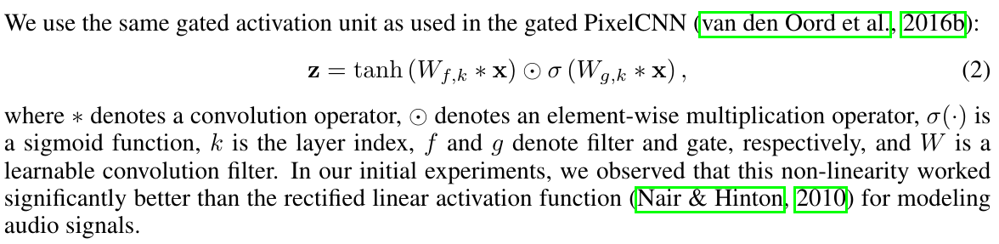
This leads us back to the PixelCNN paper[4] (recall that van der Oord, main author of WaveNet, also worked on PixelCNN):
Another potential advantage is that PixelRNNs contain multiplicative units (in the form of the LSTM gates), which may help it to model more complex interactions and non-linearity. To amend this we replaced the rectified linear units between the masked convolutions in the original pixelCNN with the following gated activation unit
It seems like the purpose of the gated activation unit is allow the convolutional neural network to create and learn higher levels of complexity to match RNNs. This is especially interesting considering that SampleRNN is similar to WaveNet but uses RNNs. If you want to read more about LSTMs, this is a good read.
N.B.! The size of the convolutional filter is always constant N, for all dilation values. That means N neighboring samples are the only ones considered for building the feature map, for a dilating distance between neighboring samples. The default value is N=2 in wavenet_params.json.
Skip connections
The diagram also shows skip connections. Described in the paper:
Both residual (He et al., 2015) and parameterised skip connections are used throughout the network, to speed up convergence and enable training of much deeper models.
Here's a simpler description of skip connections[5]:
Skip connections in deep architectures, as the name suggests, skip some layer in the neural network and feeds the output of one layer as the input to the next layers (instead of only the next one).
This helps due to the vanishing gradient problem in deep neural networks[6], [7]:
But training deep networks can be difficult because of the vanishing gradients problem. Vanishing gradients means that the gradients of the loss become more and more muted in the beginning layers of a network as the network become increasingly deeper
By using skip connections, this turns a deep network into an ensemble of relatively shallow networks (w.r.t the loss). Or, in other words, skip connections allow the neural network to compute the quality of results not only based on the previous layer (which may be far removed from the input), but by skipping backwards to previous layers closer to the input[8].
Loss function
During the training, there needs to be a step to verify the quality of the outputs against the input/training data and compute the loss/gradient. After learning parameters for this complex non-linear stack of dilated convolutions, what does WaveNet do with them?
First, let's describe the purpose of input batching. Input is batched for a training technique called Stochastic Gradient Descent, such that the training and updating of the model is done in small iterative steps against a batch. Traditionally, the gradient (or loss) of the model is computed across the entire corpus, such that the weights of the network are modified once per iteration. Conversely, mini-batch SGD allows the model to constantly update its weights on mini-batches of training data. This is more computationally efficient than computing a gradient on the entire dataset [9].
The code flows pretty nicely to create a generator (despite all the omitted parts) from the dilated convolution model shown previously:
with tf.name_scope('dilated_stack'):
for layer_index, dilation in enumerate(self.dilations):
with tf.name_scope('layer{}'.format(layer_index)):
q = tf.FIFOQueue(
dilation,
dtypes=tf.float32,
shapes=(self.batch_size, self.residual_channels))
init = q.enqueue_many(
tf.zeros((dilation, self.batch_size,
self.residual_channels)))
current_state = q.dequeue()
push = q.enqueue([current_layer])
init_ops.append(init)
push_ops.append(push)
output, current_layer = self._generator_dilation_layer(
current_layer, current_state, layer_index, dilation)
outputs.append(output)
The dilated stack weights have been stored in the model with the name layer$i, and now they're loaded into the generator object. This is then post-processed to create a waveform:
raw_output = self._create_generator(encoded, gc_embedding)
out = tf.reshape(raw_output, [-1, self.quantization_channels])
proba = tf.cast(
tf.nn.softmax(tf.cast(out, tf.float64)), tf.float32)
last = tf.slice(
proba,
[tf.shape(proba)[0] - 1, 0],
[1, self.quantization_channels])
The softmax layer[10] converts the complicated internal parameters of the neural network (i.e. the stack of dilated causal convolution) into categorical emissions, i.e. in our case choosing output samples (one-hot encoded):
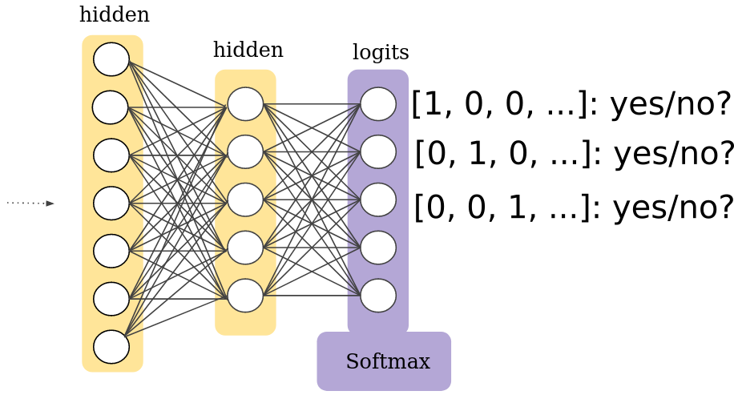
How does WaveNet update its parameters?
This is an important part of a neural network so that it knows how to improve itself - the starting parameters are generally initialized with random values, and the iterative learning process involves picking new parameters that minimize loss.
The loss code in WaveNet (still in wavenet/model.py) is:
# details omitted
# input_data = waveform, preprocessed as we saw before
network_input = input_data
target_output = input_data
# create the model network and generate outputs from the network
raw_output = self._create_network(network_input)
prediction = raw_output
loss = tf.nn.softmax_cross_entropy_with_logits(
logits=prediction,
labels=target_output)
reduced_loss = tf.reduce_mean(loss)
tf.summary.scalar('loss', reduced_loss)
The loss function is softmax_cross_entropy_with_logits[11], which
measures the probability error in discrete classification tasks in which the classes are mutually exclusive (each entry is in exactly one class)
This fits our usecase, since each of the possible 256 values of mu-law encoded samples are mutually exclusive.
The training model setup is as follows, in train.py:
optimizer_factory = {'adam': create_adam_optimizer,
'sgd': create_sgd_optimizer,
'rmsprop': create_rmsprop_optimizer}
net = WaveNetModel(
batch_size=args.batch_size,
dilations=wavenet_params["dilations"],
filter_width=wavenet_params["filter_width"],
quantization_channels=wavenet_params["quantization_channels"],
...)
loss = net.loss(input_batch=audio_batch)
optimizer = optimizer_factory[args.optimizer](
learning_rate=args.learning_rate,
momentum=args.momentum)
trainable = tf.trainable_variables()
optim = optimizer.minimize(loss, var_list=trainable)
This is where the implementors use features of TensorFlow to gather all the trainable variables of the WaveNet model, after having defined the model. Since many-layered neural networks can have thousands of hidden parameters, it's necessary to let the library handle this part. Note the essential parts of the trainable model:
- Loss - the loss function through which the quality of the results can be determined
- Trainable variables - the modifiable/trainable parameters in the WaveNet model which TensorFlow auto-registers if you build it correctly
- Optimizer - the implementation of gradient descent optimization, through which TensorFlow guesses in which direction to change the trainable variables to improve results
The actual training loop itself follows (sess.run is when TensorFlow actually executes the set up model):
for step in range(saved_global_step + 1, args.num_steps):
start_time = time.time()
summary, loss_value, _ = sess.run([summaries, loss, optim])
writer.add_summary(summary, step)
duration = time.time() - start_time
print('step {:d} - loss = {:.3f}, ({:.3f} sec/step)'
.format(step, loss_value, duration))
All the pieces we saw above are combined:
- Generate parameters of the network such that its outputting some resultant waveform (starting from randomized initial values)
- Feed some batch of input
- Use the loss function to check how close the output is to the input
- Use the optimizer function to modify the parameters in the "correct direction", i.e. in the direction of gradient/slope that is minimizing loss
- Repeat for user-specified steps - through repetitions, the model learns better (to the point of overfitting to the input)
Generating audio
After we have trained and saved a model, the last step is to generate new, unique wav files. How does WaveNet use the computed, trained model to generate new waveforms?
The code is in the generate.py script (as usual modified with details omitted for simplicity):
# load the trained WaveNet model
net = WaveNetModel(...)
samples = tf.placeholder(tf.int32)
# predict the first set of samples using the wavenet
next_sample = net.predict_proba(samples)
decode = mu_law_decode(samples, wavenet_params['quantization_channels'])
quantization_channels = wavenet_params['quantization_channels']
waveform = [quantization_channels / 2] * (net.receptive_field - 1)
waveform.append(np.random.randint(quantization_channels))
for step in range(args.samples):
# use the first set of predicted samples to feed into wavenet
# and predict the next set
outputs = [next_sample]
# Run the WaveNet to predict the next sample.
prediction = sess.run(outputs, feed_dict={samples: window})[0]
# Scale prediction distribution using temperature.
np.seterr(divide='ignore')
scaled_prediction = np.log(prediction) / args.temperature
scaled_prediction = (scaled_prediction -
np.logaddexp.reduce(scaled_prediction))
scaled_prediction = np.exp(scaled_prediction)
np.seterr(divide='warn')
sample = np.random.choice(
np.arange(quantization_channels), p=scaled_prediction)
waveform.append(sample)
As described, WaveNet is an autoregressive model, i.e. one that uses probabilities to predict the next likely sample. This can be seen clearly in the code above. The function predict_proba is defined in wavenet/model.py:
def predict_proba(self, waveform, name='wavenet'):
'''Computes the probability distribution of the next sample based on
all samples in the input waveform.
If you want to generate audio by feeding the output of the network back
as an input, see predict_proba_incremental for a faster alternative.'''
with tf.name_scope(name):
encoded = self._one_hot(waveform)
raw_output = self._create_network(encoded)
out = tf.reshape(raw_output, [-1, self.quantization_channels])
# Cast to float64 to avoid bug in TensorFlow
proba = tf.cast(
tf.nn.softmax(tf.cast(out, tf.float64)), tf.float32)
last = tf.slice(
proba,
[tf.shape(proba)[0] - 1, 0],
[1, self.quantization_channels])
return tf.reshape(last, [-1])
This ties back to the softmax distribution we discussed earlier - the internal state of the neural network weights and parameters are cast into a set of "yes/no?" decisions for emitting different sample values (in the range of 256-bit integers that are chosen in the mu-law quantization scheme).
Conditioning WaveNet
All of the above is an analysis of unconditioned WaveNet. However, WaveNet can be conditioned (i.e. influenced externally) in several ways as described in the paper.
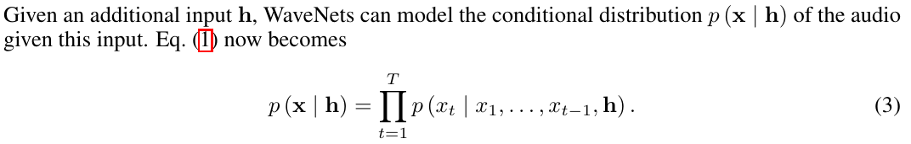
Note the difference from the original unconditional probability:
They make the following case for the use of conditioning:
By conditioning the model on other input variables, we can guide WaveNet's generation to produce audio with the required characteristics. For example, in a multi-speaker setting we can choose the speaker by feeding the speaker identity to the model as an extra input. Similarly, for TTS we need to feed information about the text as an extra input.
This solves the "babbling output" problem (which as we can see, isn't a problem, but an architecture choice). There are two choices: global and local conditioning.
Global conditioning is characterised by a single latent representation h that influences the output distribution across all timesteps, e.g. a speaker embedding in a TTS model. For local conditioning we have a second timeseries ht, possibly with a lower sampling frequency than the audio signal, e.g. linguistic features in a TTS model. We first transform this time series using a transposed convolutional network (learned upsampling) that maps it to a new time series y=f(h) with the same resolution as the audio signal, which is then used in the activation unit.
The 3 cases of activation function (unconditioned, global conditioning, local conditioning) are as follows:
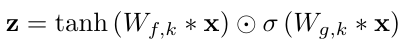
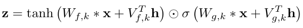
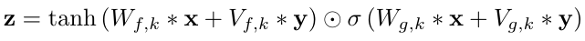
Parallelism
WaveNet's training can be parallelized. However, generation is sequential necessarily:
At training time, the conditional predictions for all timesteps can be made in parallel because all timesteps of ground truth x are known. When generating with the model, the predictions are sequential: after each sample is predicted, it is fed back into the network to predict the next sample
There is a https://arxiv.org/pdf/1611.09482.pdf fast WaveNet model for speeding up generation by caching intermediate computations.